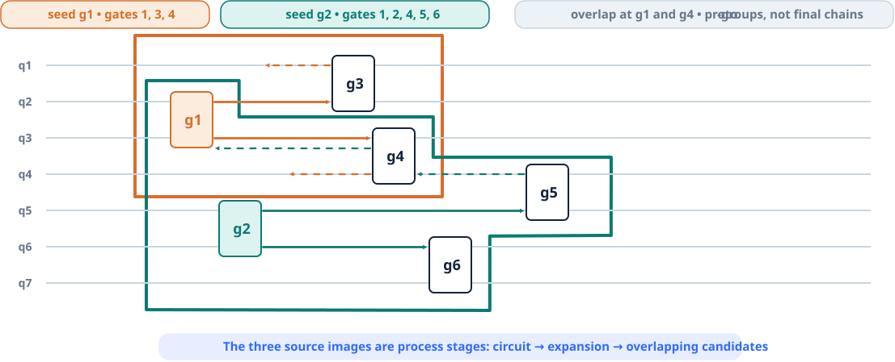

01
Experimental quantum systems
How should electronics, optics, vacuum hardware, and control software be designed as one experimental system?
Charlie He · Experimental systems engineer
My work sits between models, measurements, and the engineering decisions that connect them. I am especially interested in experimental quantum systems, RF and control hardware, test design, and reliability.
Research interests
Current interests, shaped by the systems I have worked on so far.
01
How should electronics, optics, vacuum hardware, and control software be designed as one experimental system?
02
How do parasitics, loading, and implementation details change where a useful model stops matching the hardware?
03
How can abstract mathematical ideas become useful tools for solving real problems in complex physical systems?
04
How can reduced quantum models connect microscopic dynamics to parameters an experiment can tune and observe?
Selected work
Work shaped by modeling, measurement, software, and real-world troubleshooting.
01
RF hardware · Full case study
A directly tapped, open-loop resonator developed through circuit modeling, full-wave simulation, parameter extraction, prototype builds, and room-temperature measurement.
Open the visual case study
02
Research engineering · Systems software
Developed most of a hardware-aware circuit partitioner and extended an inherited scheduler/simulator to study transport, modeled error, and constrained multi-chain execution.
Open the visual case study
03
Industry experience · Root-cause analysis
Built statistical quality-control and root-cause workflows for production data, then used them with cross-functional teams to shorten anomaly diagnosis and guide corrective action.
About
I earned an M.S. in Electrical & Computer Engineering from Duke University in May 2026 and currently work as a research assistant in the Duke Quantum Center’s Noel Lab.
My experience spans RF resonator design and characterization, trapped-ion systems work, Python-based analysis and test automation, and manufacturing root-cause analysis. I am most useful where a team needs to connect a physical model to an observable test and then explain the gap.
CV summary
Systems engineering for multi-zone trapped-ion hardware, architecture-level circuit partitioning, scheduler extensions, reproducible experiment pipelines, and regression checks.
Statistical quality control, process diagnosis, equipment troubleshooting, and cross-functional corrective action in a high-throughput production environment.
Research focus in trapped-ion quantum computing and experimental quantum error correction.
A concise web CV is provided here. A detailed résumé can be shared directly for a specific role.
Contact